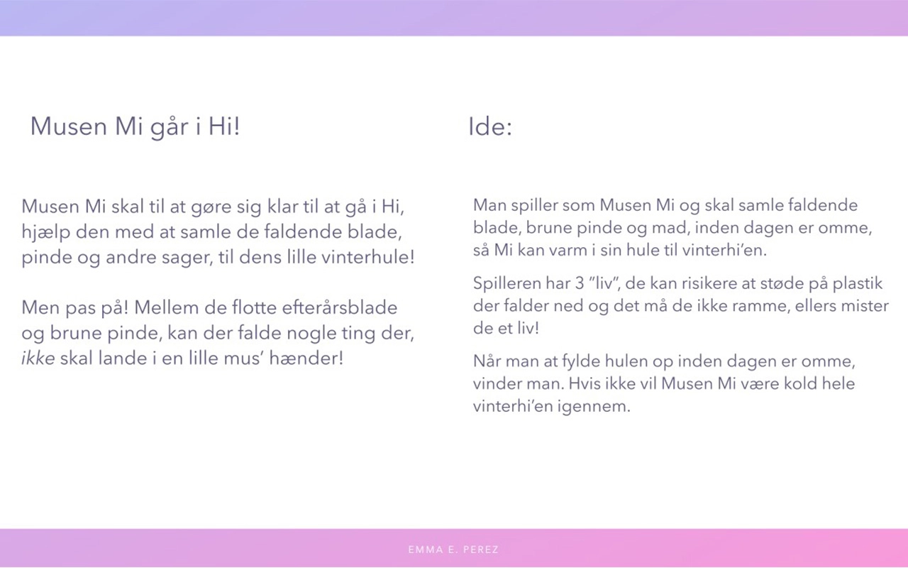
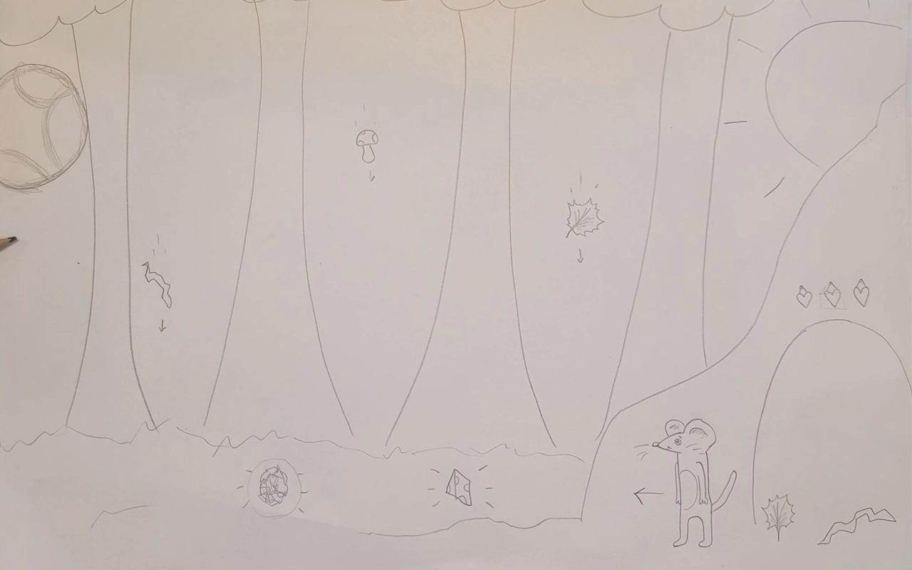
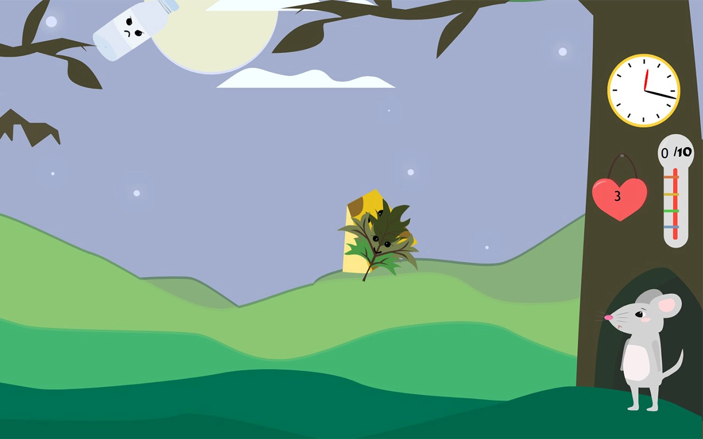

Tema 4
I tema 4 blev jeg introduceret til programmeringssproget javascript, som er en uundværligdel af det moderne internet og bruges til at kode avancerede og dynamiske websites samt skabeinteraktive elementer, som burgermenuer, slideshows, snap scrolls etc. Her har jeg brugt javascript sammen med css animationer, til at skabe et lille spil. Mit spil skulle have et koncept og en ide, som jeg selv fandt frem til og jeg skulle selv designe alle elementer og kode spillet helt fra bunden.
Løsning 04.04.01
På min side lavede jeg et interaktivt animeret spil, som jeg designede og programmerede. Udover det lavede jeg en hjemmeside, som indeholder dokumentation af spillet. Der var en række kriterer for spillet, som blandt andet indeholder point, liv, etc. Men ellers havde jeg ret meget fri leg.


